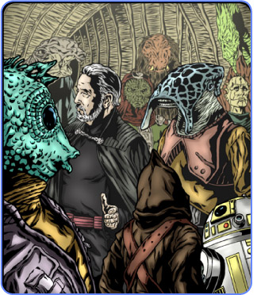

Enhanced holographic imagery reveals Dooku at Asation.
|
SATIKAN, ASATION - The Senate Bureau of Intelligence has confirmed sporadic reports that Count Dooku, popular leader of the Separatist movement, was spotted earlier in the week in a remote area of the Outer Rim known as the Gree Enclave.
"Analysis of intelligence gathered on the Gree worlds of Asation and Lonatro corroborates eyewitness accounts of Count Dooku's presence there. His intent was unknown, as is his current whereabouts," SBI Director Armand Isard told the media today during a mid-afternoon conference on Coruscant.
Reports first reached the SBI at the start of the week that a man fitting Count Dooku's description was spotted aboard the Rokak'k Baran, a mobile transport station that travels the worlds of the Enclave. A trader in the area forwarded the report to the nearest Judiciary office on Trassitan.
By the time the Judiciary dispatched a sensor probe droid, Dooku had apparently left, spending approximately four days in the area. The probe has gathered data of what is believed to be his departure, though the sensor logs are heavily distorted, possibly affected in as-yet-unknown means by Dooku.
"We were unable to get a clear image of whatever he was flying in before he jumped to lightspeed. The vessel's particle-wake is unlike any we've ever encountered, and we are currently in contact with Gree crafters to see if they may be able to shed some light on this," continued Isard.
The Director would not comment on whether the particle trail constituted evidence of a radical propulsion system or an exotic weapon.
The Gree Enclave is a private state of less-than-a-dozen worlds inhabited by the Gree, a laconic species of cephalopods said to have built a civilization that predates the Republic. The worlds of the Gree are a xenoarcheologist's treasure trove, harboring artifacts of exotic and advanced technology carefully guarded by the Gree, who have since degenerated to a point where the relics are largely unusable.
An investigation task force of Jedi are being dispatched to the distant region from the Jedi Temple on Coruscant. Jedi Masters Ashka Boda and Jabidus Inspra are leading a team of five Jedi into the Enclave to determine the purpose of Dooku's visit.
Isard would not comment on what exactly he believed Dooku was doing in the Enclave. "I am not at liberty to offer conjecture at this point," he said. Since the area has traditionally had no interests in galactic affairs, it is unlikely that the distant Enclave will become a hotbed of Separatist activity. "The Enclave is of limited political value. It is doubtful that Dooku was dispensing his rhetoric there," said Isard.
"Prior to his disappearance ten years ago, Master Dooku was known to have a passion for antiquities and exotic forms of technology," says noted Jedi Scholar Bashinan Hodizwen. "His presence there may have been something as innocuous as a shopping trip for curios."
The Jedi Council has refused comment on the story, sticking to their usual stance that Dooku is not a part of the more violent uprisings sparked by the Separatist movement. Previous statements by the Council have attributed the scattered flashpoints as the work of opportunists using Dooku's name to their own ends.
Special Feature: Who is Count Dooku?
Once a Jedi Master of great repute, Dooku's departure from the Jedi order made newsnet headlines across the galaxy. He is the most recent of the so-called "Lost Twenty," the only Jedi in the history of the order to voluntarily renounce their commissions.
Citing disillusionment with the Republic and the Council, Dooku left Coruscant for his homeworld of Serenno. There, he took up his title and wealth that was his birthright and disappeared for years.
His departure was a magnification of his long-standing tradition of independence, an unusual trait in the Jedi order. Dooku was a strong proponent of the living Force, a school of Jedi thought with more emphasis on action and instinct rather than the more serene and contemplative paths espoused by proponents of the unifying Force. This proactive stance dovetailed well into Dooku's new career as a political firebrand.
The former Jedi Master first reappeared on Raxus Prime, complete with fiery rhetoric lambasting the Senate and the Jedi order's complacency in the visible erosion of morals and ideals of the Republic. Since that well documented speech two years ago, Dooku has been spotted on worlds throughout the Outer Rim, fomenting secession and leading a popular movement that soon developed an alarming cohesion.
Dooku's base of operations is believed to be mobile. Reports of his speeches are scattered and often contradictory. Propaganda bearing his name has flooded the HoloNet, though many of these messages are believed to be forgeries.
Alarmist and reactionary Separatists have spilled blood in the Count's name, though the Jedi Council has steadfastly denied any connection between these violent acts and Dooku's agenda. "Dooku was a Jedi, and a Jedi's devotion to the Force is for knowledge and defense. He would never order these attacks," Jedi Master Mace Windu was quoted saying after the violence that rocked Antar 4.
Still, why has Dooku gained such a big following? Some of the more paranoid point to his Jedi abilities to warp minds, but even without supernatural talents, he is a charismatic man with a powerful presence. In times of bureaucratic stalemating and lethargic government response to crisis issues, Dooku has appeared as a man of action in a time in inaction. He has publicly derided the Jedi allegiance to what he defines as a corrupt and ineffective government.
In an age where heroism is hard to find and so many of the galaxy's trusted institutes are treading carefully and sidestepping important confrontation, it is easy to laud someone who is making waves, regardless of the possible damage such waves may cause.
Compiled by Harris Sanseon with the helpful assistance of Master Dav-Wes Renno and Madame Jocasta Nu of the Jedi Archives.
![[ Copyright Lucasfilm Ltd. & TM. All rights reserved. ]](../../meta/img/copyright.gif)
![[ Home ]](../../meta/img/nav/home1.gif)
![[ Business ]](../../meta/img/nav/business1.gif)
![[ Regional ]](../../meta/img/nav/regional1.gif)
![[ Jedi Watch ]](../../meta/img/nav/jediwatch1.gif)
![[ Sports ]](../../meta/img/nav/sports1.gif)
![[ Life ]](../../meta/img/nav/life1.gif)
![[ Archive ]](../../meta/img/nav/archive1.gif)
![[ Transmit this... ]](../../meta/img/trasmit_this.gif)